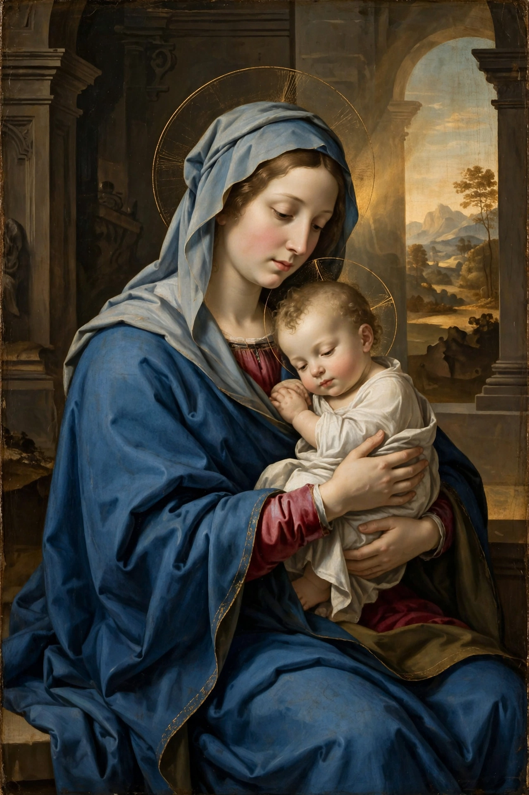

Mary was a first-century Jewish woman of Nazareth, the wife of Joseph and the mother of Jesus. She is venerated in Christianity as the Theotokos (Mother of God) in Catholic and Orthodox traditions, and is also honoured in Islam, where she is known as Maryam.

| Mary | |
|---|---|
| Born | c. 18 BC, Nazareth (traditionally) |
| Spouse | Joseph |
| Children | Jesus |
| Venerated in | Christianity, Islam |
The Gospels of Matthew and Luke describe the Annunciation, in which the angel Gabriel announces she will conceive by the Holy Spirit, and the Nativity in Bethlehem. She is present at the Crucifixion and among the disciples at Pentecost.
Catholic dogmas include the Immaculate Conception and the Assumption. Titles include Queen of Heaven and Our Lady. Feasts, prayers such as the Hail Mary and the Rosary, and pilgrimage sites such as Lourdes and Fátima centre on her devotion. See also Mass (liturgy).
Maryam is the only woman named in the Quran, which dedicates a chapter (Surah Maryam) to her and affirms the virgin birth of Jesus (Isa).